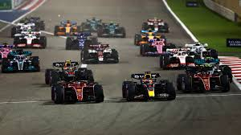

Sistem bodova se koristi na
Automobili Formule 1 su najbrži regulisani trkački automobili na svetu, zahvaljujući veoma visokim brzinama u krivinama koje se postižu stvaranjem velike količine aerodinamičke sile pritiska. Veliki deo ove potisne sile stvaraju prednja i zadnja krila, koja imaju nuspojavu izazivanja ozbiljne turbulencije iza svakog automobila. Turbulencija smanjuje potisnu silu koju stvara automobil koji ide direktno iza, što otežava preticanje. Velike promene na automobilima za sezonu 2022. su dovele do veće upotrebe aerodinamike efekta tla i modifikovanih krila kako bi se smanjila turbulencija iza automobila, sa ciljem da se olakša preticanje. Automobili zavise od elektronike i aerodinamike, vešanja i guma. Kontrola proklizavanja, kontrola pokretanja i automatsko menjanje brzina, kao i druga elektronska pomagala u vožnji, prvi put su zabranjeni 1994. Nakratko su ponovo uvedeni 2001, a nedavno su zabranjeni od 2004. odnosno 2008. godine.
Sa prosečnim godišnjim troškovima vođenja tima – projektovanja, izgradnje i održavanja automobila, plata, transporta – koji iznose oko 247 miliona američkih dolara, njegove finansijske i političke bitke se često izveštavaju. Liberti Media je 23. januara 2017. godine završio kupovinu Formule 1 grupe od privatne kompanije CVC Capital Partners za 8 milijardi dolara.
